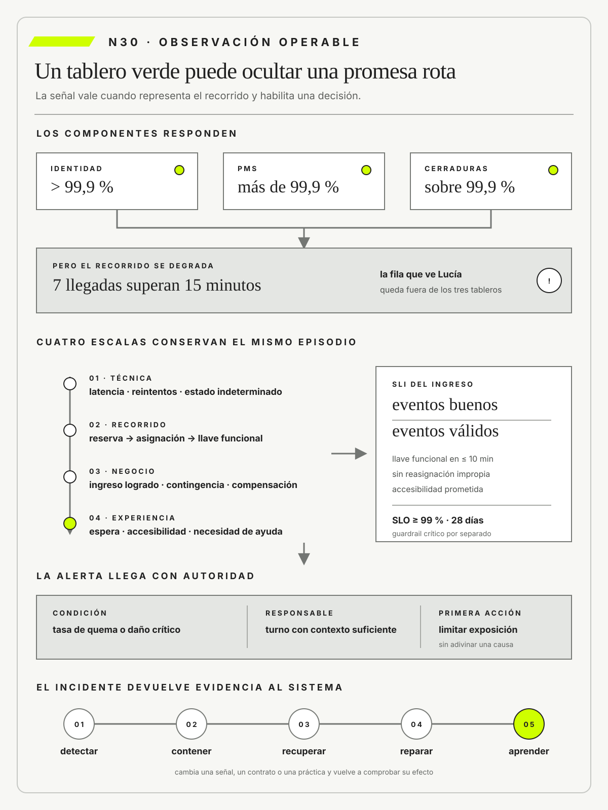
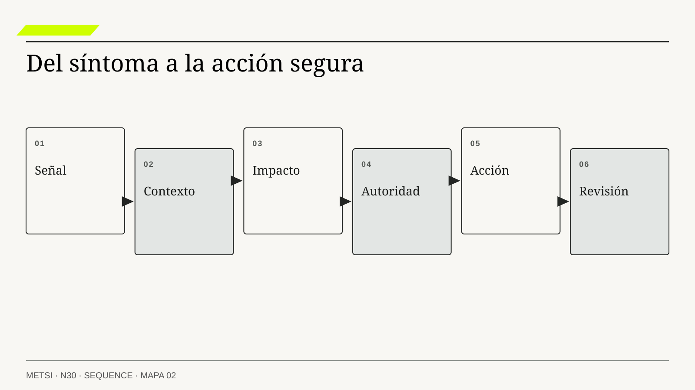

Nancy Leveson
Engineering a Safer World: Systems Thinking Applied to SafetyMIT Press · 2011
Analiza incidentes como resultados de controles e interacciones sistémicas, no como una cadena lineal de errores individuales.

Observar un servicio exige señales que permitan inferir la promesa y actuar antes de normalizar la degradación.
Observabilidad técnica, señales de negocio, SLI, SLO, incidentes y aprendizaje
Ruta de lectura: problema, distinciones, decisiones, prueba, transferencia y preparación.

Nota. SIN NUM. identifica aparatos de orientación y referencia.
Seis referentes y las obras principales utilizadas para construir N30.
Analiza incidentes como resultados de controles e interacciones sistémicas, no como una cadena lineal de errores individuales.

Distingue contextos causales y complejos para elegir entre análisis, experimentación y estabilización.

Explica por qué la voz, la seguridad psicológica y la revisión sin culpabilización mejoran el aprendizaje operativo.

Integra preparación, detección, respuesta y aprendizaje de incidentes dentro del gobierno de ciberseguridad.

Conecta respuesta a incidentes, riesgo y prácticas operativas mediante recomendaciones verificables de NIST.

Aporta criterios prácticos sobre disponibilidad, consistencia y recuperación en servicios distribuidos.
N30 no resume estas fuentes ni las convierte en receta. Las pone en tensión para construir juicio profesional.
¿Cómo saber si una promesa sigue en pie, detectar un deterioro antes de acostumbrarnos y convertir los incidentes en aprendizaje colectivo?

Telemetría sin una decisión y una autoridad para actuar no vuelve observable la promesa.
Un hospital integra el laboratorio con la historia clínica y el tablero de guardia. Durante una madrugada, servidores, colas y bases mantienen disponibilidad dentro del objetivo. Los mensajes se procesan sin error y la latencia media parece normal. Sin embargo, tres resultados críticos no llegan a la pantalla desde la cual el equipo médico decide. El laboratorio terminó su trabajo; la guardia continúa esperando una información que el sistema técnico considera entregada.
La primera alerta aparece por teléfono. Una bioquímica advierte que una muestra crítica no recibió confirmación clínica y llama a la guardia. Tecnología consulta paneles verdes y no puede responder dónde quedó el resultado. Cada componente posee telemetría, pero no existe una señal que represente la promesa completa: resultado validado, disponible para la persona autorizada, reconocido a tiempo y vinculado con una acción clínica.
El incidente admite explicaciones rivales. Puede existir una demora de propagación entre sistemas, una asociación incorrecta con el episodio del paciente o una regla de interfaz que oculta resultados todavía no firmados. También puede ocurrir que la señal observada mida entrega técnica y no recepción significativa. Agregar más métricas no distingue esas hipótesis si todas describen componentes y ninguna conserva el recorrido.
El equipo define un indicador de nivel de servicio desde la consecuencia: proporción de resultados críticos validados que son vistos y reconocidos por el rol correspondiente dentro de una ventana explícita. El denominador excluye pruebas canceladas y distingue episodios sin identidad confirmada. Un objetivo de nivel de servicio expresa el compromiso que orientará decisiones; no garantiza ausencia de daño. El presupuesto de error permite discutir cuánto incumplimiento puede aceptarse antes de frenar cambios, pero no convierte una falla severa en un consumo estadístico tolerable.
Para investigar, el equipo correlaciona identificadores de muestra, episodio, validación y visualización. Las trazas muestran recorridos; las métricas permiten observar poblaciones y tendencias; los registros aportan detalles; los relatos clínicos revelan trabajo que nunca produjo evento. Ninguna fuente es suficiente por sí sola. La observabilidad aparece como capacidad para formular preguntas nuevas sobre estados internos a partir de señales externas, no como cantidad de tableros disponibles.
La respuesta también cambia. Una alerta es accionable sólo si llega a quien puede tomar una decisión y ofrece contexto suficiente para limitar daño. Se establece una ruta de contingencia, autoridad para interrumpir una liberación y un canal alternativo que no depende de héroes. Durante el siguiente episodio, una señal detecta la falta de reconocimiento, el turno activa la ruta segura y conserva evidencia para revisar el mecanismo.
La revisión posterior no busca una causa única ni una persona culpable. Reconstruye condiciones técnicas, decisiones, carga del turno y diseño de la interfaz. Las métricas DORA permiten observar capacidad de entrega y estabilidad del cambio, pero no reemplazan señales de negocio, servicio o experiencia. La mejora debe conectar frecuencia de cambios, tiempo de entrega, fallas, recuperación y retrabajo con la consecuencia que la organización prometió sostener.
N30 cierra el Bloque F. Recibe una liberación gobernada y completa el circuito con señales, respuesta e incorporación de aprendizaje. Un servicio observable no es el que produce más datos, sino el que permite reconocer degradación relevante, actuar antes de normalizarla y verificar que la corrección modificó la operación.
HH-30 observa la liberación controlada de HH-29. Los servicios de identidad, PMS y cerraduras mantienen disponibilidad superior a 99,9%, pero Lucía Ferreyra registra siete ingresos con más de quince minutos de espera. Cada tablero mide su componente y ninguno representa la promesa completa. Camila Duarte ve reservas confirmadas; Mariela Benítez ve habitaciones liberadas; Federico Müller ve respuestas exitosas. La fila que ve Recepción queda fuera del sistema de señales.

Ricardo Sosa arma una línea temporal con eventos técnicos, reaperturas de caso, reasignaciones, llamados y decisiones manuales. Descubre que el servicio de identidad responde, aunque demasiado tarde para el pico de llegada, y que los reintentos multiplican mensajes sin mejorar el ingreso. Una alerta por CPU no habría cambiado la decisión. Una señal sobre tiempo hasta llave y porcentaje de excepciones manuales sí habría mostrado degradación de la promesa.
El mapa HH-30 define un SLI de ingresos completados dentro del umbral por población y canal, un SLO explícito y un presupuesto de error que no habilita daño ilimitado. Elena Acosta acuerda que una falla severa de accesibilidad anula la condición de avance aunque el porcentaje mensual siga dentro del objetivo. La alerta debe nombrar responsable, decisión posible y evidencia necesaria. Si nadie puede actuar, es ruido y no control.
La revisión posterior conserva hipótesis rivales: capacidad insuficiente, contrato temporal mal calibrado y reintentos que amplifican demora. Las acciones tienen responsable, fecha y prueba observable. El acuerdo se revisará tras cuatro semanas o ante un incidente de impacto alto. HH-31 recibirá esta disciplina de observación para decidir cuándo una capacidad de IA agrega valor y cuándo sólo introduce una nueva fuente de incertidumbre.
Un servicio es observable cuando conecta señales técnicas, de negocio, experiencia y operación con una promesa, una población y una decisión posible. La telemetría y los tableros no garantizan comprensión. Sirven cuando ayudan a seguir recorridos, comparar explicaciones y reconocer un deterioro antes de que se vuelva costumbre.
Los SLI delimitan qué se observa. Los SLO hacen explícito un compromiso. Las alertas asignan una acción y la revisión posterior devuelve aprendizaje al sistema. Si esos elementos no nombran la consecuencia, la autoridad y el límite de exposición, los componentes pueden permanecer verdes mientras el servicio real falla.
La observación se vuelve operable cuando conecta señales técnicas, de recorrido, de negocio y de experiencia con un SLI defendible, un SLO situado, una autoridad capaz de actuar y un aprendizaje que modifica el sistema.

N29 delimitó qué versión se expuso, a quiénes y con qué salida. Esa trazabilidad permite que N30 interprete señales de la operación sin mezclar configuraciones ni atribuir toda variación al último despliegue.
El nuevo problema es decidir qué observar y quién puede actuar a tiempo. SLI, SLO, alertas e incidentes deben conectar tecnología con consecuencias para el huésped. Recién después de construir ese bucle de evidencia N31 podrá preguntar si alguna capacidad de IA resulta pertinente.
Beyer, B., Jones, C., Petoff, J. y Murphy, N. R. fundamentan indicadores, objetivos y presupuestos de error que conectan confiabilidad con decisiones de operación.
Beyer, B., Murphy, N. R., Rensin, D. K., Kawahara, K. y Thorne, S. traducen confiabilidad en prácticas e instrumentos operativos.
OpenTelemetry (2026a) estandariza contexto y procesamiento de telemetría en su especificación; OpenTelemetry (2026b) distingue trazas, métricas y registros como señales para observar sistemas.
Nelson, A., Rekhi, S., Scarfone, K. y Souppaya, M. integran respuesta a incidentes con gobierno de riesgo en la revisión vigente de NIST.
Pascoe, C., Quinn, S. y Scarfone, K. sitúan detección, respuesta y aprendizaje de incidentes dentro de una función de gobierno con responsables y decisiones explícitas.
Forsgren, N., Humble, J. y Kim, G. muestran que desempeño de entrega y estabilidad deben leerse juntos y que la información operacional necesita conducir a aprendizaje organizacional.
Allspaw, J. examina decisiones y adaptación bajo presión operativa.
Hollnagel, E. amplía el aprendizaje desde fallas hacia variabilidad cotidiana.
Woods, D. D. define capacidades para responder a sorpresa y cambio.
Leveson, N. permite reconstruir incidentes como fallas de control y retroalimentación entre niveles, incluso cuando cada componente conserva sus métricas.
ISO/IEC establece requisitos de gestión para sostener servicios.
Snowden, D. J. y Boone, M. E. distinguen contextos que requieren analizar, experimentar o estabilizar antes de decidir; Edmondson, A. C. vincula voz y seguridad psicológica con la capacidad de aprender de incidentes; Vogels, W. muestra que operar servicios distribuidos exige compromisos explícitos sobre consistencia y recuperación.
La observabilidad es la capacidad de comprender estados y comportamientos internos mediante señales externas suficientes y contextualizadas. No es sinónimo de monitoreo, acumulación de registros ni compra de una plataforma. Requiere instrumentación y un modelo que permita formular preguntas nuevas.
En HH-30, una traza conecta la reserva externa con el estado intermedio, la cola manual y la decisión de Recepción. La evidencia debe reconstruir el episodio sin depender de quien diseñó el sistema. Correlación, procedencia y semántica importan más que volumen aislado.
No todo estado puede inferirse y la instrumentación también falla. El alcance declara qué preguntas puede responder, qué señales faltan y qué poblaciones quedan poco representadas. Su calidad se revisa ante episodios no previstos, cuando explica una consecuencia y habilita una acción segura.
La capacidad depende de un modelo del sistema que conecte señales con hipótesis. Una traza interrumpida puede indicar muestreo, pérdida de contexto, caída de un componente o un tramo manual; el dato no elige entre esas explicaciones. HH-30 formula preguntas y busca observaciones que las discriminen. Federico aporta relaciones técnicas, Lucía describe lo que ve en el mostrador y Ricardo compara el flujo operativo. La observabilidad surge de esa composición y no de una herramienta que promete revelar automáticamente cualquier estado.
La instrumentación se prueba como parte del servicio. Se introducen identificadores conocidos, se corta una dependencia y se verifica qué señales llegan, con qué demora y qué datos pierden. Un sistema puede emitir registros correctos y no conservar la relación causal necesaria. Cuando la propia telemetría se degrada, la operación necesita reconocer la pérdida de confianza y reducir el alcance de sus conclusiones. El silencio no se interpreta como normalidad sin una señal que demuestre que el mecanismo sigue observando.
El monitoreo compara señales conocidas con condiciones y umbrales previamente definidos. Detecta desviaciones esperadas y activa decisiones operativas, pero no explica por sí solo causalidad ni responde preguntas que nadie formuló.
Hotel Horizonte vigila ingresos logrados por minuto y estados indeterminados. HH-30 vincula cada indicador con población, ventana, responsable y primera acción. Cobertura, precisión y utilidad de las alertas muestran si el monitoreo protege la promesa o sólo produce mensajes.
Los umbrales estáticos pueden ignorar contexto o generar ruido. Se calibran con episodios y consecuencias, no sólo con distribución histórica. Cuando una alerta se silencia repetidamente o llega después del daño, se revisa la condición y la capacidad de respuesta.
Cada control responde a una pregunta conocida: si crece la cola, si cae una dependencia o si se agota una capacidad. El catálogo registra fuente, cálculo, ventana, responsable y decisión asociada. Esta relación permite retirar una métrica cuando ya no modifica ninguna acción. También distingue ausencia de alerta de ausencia de problema. Si el evento queda fuera de la cobertura declarada, el monitoreo no autoriza concluir que el recorrido está sano.
La calibración compara errores de detección con consecuencias. Un umbral muy sensible interrumpe al turno y puede ocultar avisos críticos entre ruido; uno demasiado alto informa después de que la reparación se volvió costosa. HH-30 revisa falsos positivos, falsos negativos y tiempo útil para actuar, desagregados por horario y población. El objetivo no es minimizar notificaciones en abstracto, sino conservar una señal que llegue antes del daño y a una persona capaz de intervenir.
La telemetría reúne trazas, métricas, registros y contexto emitidos por componentes y recorridos. No se vuelve evidencia por existir en gran volumen. Correlación, semántica, integridad y procedencia permiten reconstruir actividad distribuida.
HH-30 utiliza un identificador de episodio a través del canal, el PMS y la cerradura. También registra decisiones manuales para evitar que el tramo sin software desaparezca. Muestreo y retención se prueban con una excepción, porque una traza incompleta puede sostener una explicación equivocada.
Más telemetría aumenta costo, exposición de datos y carga cognitiva. La selección parte de decisiones y preguntas concretas, minimiza información personal y fija plazos. Una señal se conserva cuando contribuye a detectar, explicar o reparar; no por la comodidad de capturarla.
Las trazas muestran relaciones entre operaciones; las métricas, comportamiento agregado; los registros, hechos discretos con contexto. Ninguna fuente reemplaza a las otras y todas necesitan convenciones compartidas. HH-30 define nombres, unidades, identificadores y relojes para evitar que dos componentes reporten «duración» con sentidos distintos. La calidad se comprueba siguiendo un episodio conocido desde el canal hasta la llave y comparándolo con la reconstrucción de Recepción.
El muestreo se diseña según riesgo. Conservar sólo recorridos rápidos puede borrar las excepciones que se intentan comprender; registrar todo puede ser inviable o indebido. Se aplican tasas adaptativas, prioridad para errores y protección de campos sensibles, y se documenta qué quedó excluido. La retención distingue investigación inmediata de tendencia histórica. Cuando una persona solicita rectificación, el linaje permite localizar y corregir señales derivadas sin mantener datos innecesarios indefinidamente.
Una señal de negocio representa una consecuencia operativa o de valor producida por el sistema. No se reduce a transacciones técnicas ni a un indicador financiero tardío. Conecta eventos del recorrido con población y resultado.
Un ingreso logrado sin reasignación representa mejor la promesa que una respuesta HTTP exitosa. HH-30 reconcilia esa señal con evidencia de Recepción y Housekeeping. La definición incluye denominador, ventana, exclusiones y fuente para impedir que cambios de captura parezcan mejoras.
Toda señal puede inducir atajos. Si sólo se premia velocidad, puede aumentar trabajo invisible o reducir verificación. Por eso se combina con salvaguardas de accesibilidad, integridad y reparación, y se revisa cuando deja de anticipar la experiencia real.
Definir la señal exige una ontología operacional. «Ingreso completado» puede significar llave emitida, habitación accesible entregada o huésped efectivamente alojado. HH-30 elige el punto que representa la promesa y conserva eventos anteriores para diagnosticar. El denominador incluye intentos válidos aunque terminen en contingencia, de modo que el sistema no mejore excluyendo casos difíciles. Las reglas de clasificación quedan versionadas y cualquier cambio produce una serie separada o una reconciliación explícita.
Las señales cualitativas también informan. Un reclamo, una observación de Lucía o una reparación excepcional puede revelar una consecuencia antes de alcanzar volumen estadístico. El equipo no convierte cada relato en tendencia, pero lo vincula con episodios y busca evidencia adicional. Esta combinación evita dos extremos: gobernar sólo por anécdotas y descartar daños raros porque todavía no modificaron un indicador agregado. La severidad define cuándo una única señal basta para detener.
DORA organiza en 2026 cinco métricas de desempeño de entrega de software. Tres describen el rendimiento del cambio: tiempo de entrega de cambios, frecuencia de despliegue y tasa de retrabajo del despliegue. Dos observan inestabilidad: tasa de fallas de cambio y tiempo de recuperación de un despliegue fallido. La unidad recomendada es una aplicación o servicio, porque agregar productos con dinámicas distintas puede fabricar una cifra que no representa a ninguno.
El tiempo de entrega de cambios observa cuánto transcurre desde que una modificación queda registrada hasta que opera en producción. Puede revelar inventario, espera y lotes grandes. No mide por sí solo tiempo desde una necesidad hasta un resultado. Una idea puede esperar meses antes del primer commit, y una entrega rápida puede no producir valor. HH-30 lo vincula con la hipótesis de liberación y con el episodio que debía cambiar.
La frecuencia de despliegue cuenta con qué regularidad se ponen cambios en producción. Una frecuencia mayor puede reducir tamaño de lote y acelerar retroalimentación, pero no constituye un objetivo universal. Servicios estables, dispositivos físicos o cambios regulados pueden necesitar cadencias diferentes. El equipo examina si cada despliegue conserva una unidad interpretable y si la práctica permite detenerse. Dividir artificialmente una liberación para mejorar el conteo no aumenta capacidad.
La tasa de fallas de cambio estima qué proporción de despliegues produce una degradación que exige intervención. Su definición necesita incluir rollback, rollforward, hotfix y reparación manual según el servicio. La ausencia de incidentes declarados puede significar estabilidad o subregistro. HH-30 reconcilia la cifra con alertas, tickets y relatos de Operaciones para no premiar la invisibilidad.
El tiempo de recuperación de un despliegue fallido mide desde la falla causada por el cambio hasta la restauración del servicio. El cierre se define por la promesa recuperada, no sólo por el proceso técnico terminado. En Hotel Horizonte, volver el código puede tomar minutos y reconciliar reservas varias horas. Ambas duraciones se conservan; la segunda determina cuándo la capacidad volvió a sostener el ingreso.
La tasa de retrabajo del despliegue observa despliegues no planificados que corrigen fallas originadas por cambios anteriores. Distingue una reparación productiva del flujo de valor que se pretendía entregar. Tampoco debe castigar la transparencia: si registrar reparaciones empeora el indicador, el sistema puede incentivar que se oculten. Se utiliza para investigar calidad de preparación, tamaño de lote y capacidad de detección.
Las cinco métricas se leen juntas y junto con resultados del servicio. Reducir tiempo sin observar fallas puede acelerar daño; bajar fallas mediante inmovilidad puede impedir adaptación; recuperar rápido sin reparar consecuencias externas puede declarar un éxito falso. N30 agrega SLI, SLO, señales de negocio, seguridad, accesibilidad y carga operacional. DORA aporta un lente sobre entrega, no una evaluación total del equipo ni un ranking entre áreas.
HH-30 construye una ficha por servicio con definición, fuente, ventana, cobertura y decisión asociada. Compara tendencias de la misma unidad antes y después de una intervención, conserva cambios de medición y evita metas individuales. Si una métrica cambia, el equipo formula explicaciones rivales: menor lote, demanda distinta, pérdida de observabilidad o reclasificación de incidentes. Sólo después busca evidencia adicional. El objetivo es aprender cómo el sistema entrega y recupera, no alcanzar una categoría externa.
Un indicador de nivel de servicio, SLI, cuantifica una dimensión observable de la capacidad que importa a quienes dependen de ella. No es cualquier métrica disponible. Define eventos válidos, población, ventana y método de cálculo.


HH-30 mide la proporción de ingresos completados dentro del umbral acordado. El numerador y el denominador deben incluir episodios degradados y no sólo respuestas exitosas. Comparar el indicador con casos reales permite saber si representa la promesa o excluye precisamente sus fallas.
Un SLI agregado puede ocultar turnos, canales o poblaciones críticas. Por eso se desagrega cuando el daño no se distribuye de manera uniforme. La definición queda versionada y cualquier cambio debe distinguir mejora del sistema de cambio en la medición.
El cálculo separa eventos buenos, válidos e inválidos. Excluir errores de instrumentación puede ser razonable si se informan; excluir solicitudes que el sistema no pudo clasificar puede mejorar artificialmente el resultado. HH-30 conserva el motivo de cada exclusión y una tasa de cobertura. Si la señal sólo representa una parte conveniente del recorrido, no puede sostener el objetivo general. Un indicador defendible permite reconstruir desde la cifra hasta una muestra de episodios.
La ventana condiciona interpretación y acción. Una media mensual puede ocultar dos horas de caída crítica; una ventana demasiado corta puede reaccionar a variación normal. El equipo combina ventanas para detectar y para gobernar tendencia, con umbrales coherentes. También compara retraso de la señal con el tiempo disponible para reparar. Un SLI publicado al día siguiente sirve para aprender, pero no para activar una contingencia en el turno actual.
Un objetivo de nivel de servicio, SLO, establece el nivel esperado de un SLI durante una ventana y orienta decisiones. No es una promesa de perfección ni se convierte automáticamente en un acuerdo contractual.
En Hotel Horizonte, el SLO crea un límite común para equilibrar confiabilidad, cambio y costo. HH-30 registra qué ocurre cuando se acerca o supera el umbral: limitar exposición, priorizar reparación o revisar la expectativa. Sin consecuencia, el objetivo es decorativo.
Un valor arbitrario puede normalizar mala experiencia o exigir un costo injustificable. El nivel se deriva de la promesa, el riesgo y las alternativas disponibles, y se revisa con evidencia de operación. Las poblaciones con obligación especial pueden necesitar objetivos propios.
El objetivo expresa un compromiso interno y necesita una política de acción. Al superar el límite, puede detenerse un cambio, aumentar soporte, activar un modo degradado o revisar la promesa. Si todas las decisiones continúan igual, el SLO sólo describe una aspiración. Elena acuerda quién puede actuar y qué recursos se liberan. Los equipos conocen el margen y no negocian durante cada incidente qué significa incumplir.
Un único porcentaje rara vez basta. La disponibilidad puede complementarse con tiempo de reparación, integridad del estado y accesibilidad. Sin embargo, multiplicar objetivos puede producir contradicciones. HH-30 establece prioridades y condiciones: una falla severa de accesibilidad bloquea avance aunque el porcentaje general se mantenga. El conjunto se revisa cuando incentiva comportamientos no deseados o cuando la alternativa técnica cambia. La meta es orientar decisiones, no maximizar indicadores independientes.
HH-30 vuelve explícito el ejemplo. Define como evento válido cada llegada con reserva confirmada durante la ventana observada, incluida aquella que termina por contingencia manual. Un evento es bueno cuando la persona obtiene una llave funcional en no más de diez minutos, sin reasignación impropia y con las condiciones de accesibilidad prometidas. El SLI es eventos buenos dividido eventos válidos, desagregado por canal, turno y necesidad de asistencia.
El SLO exige al menos 99 % en una ventana móvil de veintiocho días. Si hubo 10.000 llegadas válidas, el objetivo admite hasta 100 eventos no buenos dentro de esa definición. No declara aceptable su consecuencia: fija el límite cuantitativo que activa la política de confiabilidad.
La ficha conserva además cuántos episodios no pudieron clasificarse. Si se eliminan del denominador porque la telemetría quedó incompleta, el indicador puede mejorar precisamente cuando pierde cobertura. Esa tasa se informa junto al SLI y también condiciona cualquier ampliación.
La disponibilidad de identidad, PMS y cerraduras superior a 99,9 % no satisface necesariamente ese SLO. Esos indicadores miden componentes y tienen otros denominadores. Un ingreso puede atravesar respuestas técnicamente exitosas y superar diez minutos por reintentos, coordinación o un estado ambiguo. A la inversa, una caída breve de un componente puede no romper la promesa si la contingencia conserva el recorrido.
Beyer y sus coautores proponen partir de una experiencia que importe a quien usa el servicio y convertirla en eventos buenos y válidos. HH-30 adopta esa lógica y agrega límites de severidad para consecuencias que un porcentaje no debe compensar.
El presupuesto de error es la fracción de eventos no buenos permitida por el SLO durante su ventana. Para un SLO de 99 %, equivale a 1 % de los eventos válidos. Vincula confiabilidad con ritmo de cambio porque permite acordar de antemano qué decisiones se restringen cuando el servicio consume ese margen. No autoriza daño ni vuelve aceptable cualquier falla incluida en el porcentaje.
HH-30 observa consumo y velocidad de consumo para decidir si continúa el despliegue o prioriza estabilidad. En la ventana global de 10.000 llegadas, cuatro eventos no buenos consumen cuatro de los cien admitidos, es decir, 4 % del presupuesto. Para la cohorte piloto se fija además un límite transitorio de cinco eventos no buenos sobre 500 llegadas.
Si los cuatro aparecen durante las primeras cien, ya se consumió 80 % de ese límite piloto y la tasa observada de error, 4 %, quema tolerancia cuatro veces más rápido que el 1 % permitido por el SLO. La política detiene la ampliación, investiga el mecanismo y mantiene la ruta alternativa.
No confunde ese límite de exposición con el presupuesto global: ambas reglas se registran con su denominador y su ventana.
Algunas obligaciones críticas necesitan una condición de detención separada. Una reasignación que elimina una condición de accesibilidad puede detener el piloto ante el primer episodio, aunque todavía queden eventos disponibles en el presupuesto general. Esa regla es un guardrail de severidad y no una ponderación oculta del cálculo. En otros casos, el presupuesto hace visible la tolerancia acordada y evita discusiones abstractas. El SLO y su política se revisan cuando cambia la promesa, la demanda, la arquitectura o la capacidad de reparar.
El consumo se calcula con el numerador, denominador y ventana declarados. No se modifica retrospectivamente para aumentar el peso de un incidente. HH-30 mantiene el presupuesto general y reglas de detención independientes para clases críticas, además de cortes que muestran distribución. La tasa de quema anticipa agotamiento antes de llegar a cero y permite priorizar trabajo de estabilidad. Cada decisión conserva qué parte se consumió, qué episodios la explican y qué población recibió sus consecuencias.
La política no pertenece sólo a Tecnología. Comercial influye al ampliar demanda, Producto al liberar cambios y Operaciones al sostener contingencias. Si un área obtiene velocidad mientras otra absorbe reparaciones, ese trabajo integra la decisión de continuar, aunque no altere la aritmética del presupuesto.
En una ventana fija, el presupuesto se reinicia al comenzar el período siguiente; en una ventana móvil, se recupera cuando los eventos antiguos salen del cálculo. Para que ese mecanismo temporal no borre una degradación pendiente, la política puede mantener una congelación o una obligación de reparación hasta verificar el cambio. Presupuesto y política se relacionan, pero no son el mismo objeto.
El ejemplo permite distinguir tres preguntas. El SLI pregunta qué ocurrió; el SLO, qué nivel se pretende sostener; el presupuesto, cuánto incumplimiento queda dentro de la ventana. La política decide qué hacer con esa información. Un equipo puede conservar presupuesto y detener por un guardrail crítico, o agotar presupuesto y permitir sólo cambios que reduzcan riesgo. Esta separación sigue la propuesta de Site Reliability Engineering y evita presentar una obligación de accesibilidad como si pudiera convertirse en una fracción intercambiable de eventos fallidos.
Un incidente es una alteración no deseada de una capacidad o promesa que requiere coordinación y aprendizaje. No se define sólo por caída técnica ni por la severidad asignada al final. Incluye degradación, datos incorrectos y trabajo humano extraordinario.

HH-30 reconstruye un turno en que reservas válidas no se transforman en ingresos. La línea temporal conserva señales, decisiones, comunicaciones y consecuencias. La clasificación inicial puede cambiar con evidencia y no debe retrasar contención ni reparación.
El cierre no depende de una causa única. Distingue factores contribuyentes, daño, recuperación y acciones verificables. Un incidente aporta aprendizaje cuando modifica una capacidad y define cómo se observará el episodio siguiente.
La declaración inicial es provisional y orientada a coordinar. Define capacidad afectada, alcance conocido, severidad estimada y autoridad, sin esperar un diagnóstico completo. Puede escalar o reducirse con evidencia. Esta flexibilidad evita dos fallas: demorar la respuesta por discutir la etiqueta y sostener una emergencia después de recuperar la promesa. El registro conserva los cambios de clasificación para comprender qué señales faltaron o indujeron una interpretación equivocada.
Contener, recuperar y reparar son momentos distintos. Contener limita propagación; recuperar restituye una capacidad; reparar atiende estados y personas ya afectados. HH-30 asigna evidencia de cierre a cada uno. Un tablero verde puede confirmar recuperación técnica mientras las reservas permanecen incongruentes. El incidente no termina hasta reconocer esa deuda, asignar autoridad y comunicar. La investigación posterior puede continuar sin mantener indefinidamente la coordinación de emergencia.
La respuesta coordinada distribuye autoridad y comunicación para limitar daño bajo presión. No depende de una persona heroica ni de una guía operativa inflexible. Define roles, prioridades, canales, escalamiento y vínculo con quienes están afectados.
Tecnología repara estados mientras Operaciones sostiene atención y comunica. HH-30 ensaya esa división con datos incompletos y cambios de turno. La prueba observa si cada actor recibe lo necesario y si las decisiones contradictorias se resuelven sin abandonar la promesa completa.
La coordinación puede fallar cuando el plan contradice responsabilidades cotidianas. Por eso se ejercita y actualiza con quienes ejecutan, no sólo con quienes diseñan. El resultado se mide por daño limitado, recuperación y comprensión compartida, no por cantidad de mensajes.
Los roles se expresan mediante decisiones y no sólo títulos. Quien coordina prioriza y resuelve contradicciones; quien investiga propone hipótesis; quien comunica protege a las personas afectadas; quien registra conserva la línea temporal. Una misma persona puede asumir más de un rol en equipos pequeños, pero las obligaciones no desaparecen. El relevo incluye estado, hipótesis, acciones realizadas y próxima decisión para impedir que cada turno reinicie el diagnóstico.
La comunicación externa reconoce incertidumbre y ofrece una acción. Camila no promete un tiempo que la evidencia no sostiene; Lucía informa alternativas y reparación. Los mensajes internos diferencian hechos de interpretaciones para que una hipótesis dominante no silencie otras. Después del incidente se examina si la estructura permitió hablar a quien observaba una contradicción. Una respuesta rápida que desalienta esas señales puede restituir hoy y repetir mañana.
Una revisión posterior reconstruye condiciones, decisiones y mecanismos para aprender sin reducir el incidente a culpa individual. No es una cronología ornamental ni una búsqueda automática de causa raíz única.
HH-30 compara contrato temporal, alertas, modo degradado y capacidad real de Recepción. Evidencia de distintas fuentes permite sostener explicaciones rivales. El análisis conserva responsabilidad y reparación sin castigar la información necesaria para comprender.
Cada acción posterior tiene responsable, fecha y prueba observable. Una lista genérica de mejoras no demuestra aprendizaje. La revisión termina cuando conecta un cambio con el mecanismo que pretende modificar y fija el episodio donde podrá evaluarse.
La línea temporal conserva qué información estaba disponible cuando se decidió. Esta distinción evita juzgar con certeza retrospectiva y permite evaluar razonamiento, no sólo resultado. La revisión selecciona puntos donde una señal pudo haber cambiado la acción y pregunta por qué no llegó, no se entendió o no habilitó autoridad. Las explicaciones rivales se comparan con evidencia; «error humano» y «falla del sistema» no se aceptan como causas finales porque no describen el mecanismo modificable.
Las personas participantes necesitan seguridad para informar adaptaciones y errores sin que eso elimine responsabilidad. Ocultar trabajo manual protege una apariencia de automatización y empobrece la investigación. Elena separa aprendizaje de sanción, salvo conducta deliberadamente indebida, y asegura seguimiento de compromisos. La revisión comunica qué cambió y qué no pudo resolverse. Si las acciones se cierran por fecha sin comprobar efecto, la organización aprende a completar tareas, no a reducir recurrencia.
Allspaw estudia cómo equipos expertos razonan bajo presión y muestra que el diagnóstico real usa heurísticas, información parcial y coordinación, no una búsqueda lineal de causa. Hollnagel amplía el foco hacia la variabilidad cotidiana que normalmente permite que el trabajo salga bien, mientras Leveson pregunta por controles e interacciones que hicieron posible el daño. HH-30 usa las tres miradas como contraste.
La primera ayuda a reconstruir decisiones disponibles en el momento; la segunda evita estudiar sólo episodios negativos; la tercera exige localizar una condición de control que pueda modificarse. Una revisión completa no mezcla estas tradiciones como sinónimos ni elige una explicación por prestigio. Las usa para formular hipótesis rivales y vincular cada acción con evidencia futura.
Un bucle de aprendizaje operativo devuelve evidencia de uso e incidentes a arquitectura, contratos, calidad y gobierno de liberación. No es una retrospectiva aislada ni una lista infinita de tareas. Prioriza cambios por mecanismo, riesgo y capacidad de contener recurrencia.
HH-30 actualiza HH-26 a HH-29 con evidencia del turno. Una falla puede modificar el mapa de dependencia, una garantía temporal, un escenario de calidad y una puerta de despliegue. Cada cambio conserva el vínculo con el episodio para evitar correcciones sin fundamento.
Aprender localmente no transforma incentivos o dependencias estructurales sin autoridad. El bucle debe llegar a quienes pueden modificar presupuesto, contratos y promesas. Se considera cerrado cuando cambia una decisión, la nueva práctica se ejecuta y la señal posterior confirma o refuta la hipótesis.
Cada hallazgo se dirige al nivel capaz de modificar su mecanismo. Una alerta tardía puede requerir instrumentación; un estado ambiguo, contrato semántico; una reparación imposible, arquitectura o acuerdo con proveedor; una promesa excesiva, decisión comercial. Enviar todo a una lista única diluye prioridad y acumula deuda. HH-30 conserva el vínculo con el episodio y la consecuencia para que el área receptora comprenda por qué el cambio importa y cómo comprobarlo.
El bucle incluye refutación. Si la acción implementada no modifica la señal esperada, se reabre la explicación en lugar de declarar éxito por completar el trabajo. El equipo puede descubrir que el cambio actuó sobre un síntoma o que otra condición dominaba. Esa evidencia actualiza también los documentos previos y la formación del turno. Aprender es cambiar la representación y la capacidad a partir de resultados, no fijar una narración definitiva del incidente.
HH-30 parte de una promesa observable y conecta señales con decisiones operativas. El mapa no premia cantidad de métricas: exige que cada indicador permita reconocer daño, convocar autoridad o verificar reparación.
El mapa se valida comparando un tablero verde con una fila creciente en Recepción. Si la señal no detecta esa divergencia o la alerta llega a alguien sin capacidad de intervenir, la observabilidad sigue centrada en componentes y no en la promesa.
La construcción comienza por un episodio que importe y recorre hacia atrás qué señales habrían permitido reconocerlo antes. Después avanza hacia la decisión: quién recibe la alerta, qué puede hacer y cómo sabe si la acción funcionó. Esta doble lectura evita coleccionar métricas sin propósito y también diseñar una respuesta que carece de evidencia. Cada vínculo indica latencia, cobertura y nivel de confianza. Si una señal se deriva de otra, el mapa conserva la relación para no contarla como confirmación independiente.
El instrumento incluye el tramo humano. Las conversaciones, planillas y decisiones de excepción se representan con el mismo rigor que la telemetría técnica, aunque necesiten otra forma de registro. No se busca vigilar a las personas, sino observar el trabajo que sostiene o repara la promesa. La minimización define qué información no debe capturarse y durante cuánto tiempo se conserva lo necesario. Lucía y Mariela revisan si la representación permite actuar sin exponer datos ni convertir la experiencia del huésped en un rastro indiscriminado.
Una plataforma pública mantiene infraestructura disponible, pero una validación externa deja solicitudes en espera sin explicación. El tablero técnico no refleja la pérdida de capacidad ciudadana.
El mapa incorpora recorrido, señal de negocio, población, SLO, comunicación y contingencia. La revisión posterior modifica el acuerdo con el tercero y la vía presencial.
La señal se define como solicitud resuelta o encaminada a una alternativa dentro de la ventana informada, no como respuesta de la validación. Se desagrega por canal, región y necesidad de asistencia para detectar exclusiones. Ante un estado indeterminado, la persona recibe constancia y plazo, mientras un equipo con autoridad puede continuar o reparar. La alerta no expone datos personales y conserva un identificador suficiente para reconstruir el episodio.
La prueba interrumpe la validación en un momento de alta demanda. Se observa cuánto tarda en aparecer la cola, quién la reconoce y si la vía presencial absorbe capacidad sin crear otra espera invisible. La revisión puede cambiar el objetivo, el contrato con el tercero o la información al público. Si sólo agrega un gráfico del servicio externo, la prestación continúa sin observabilidad sobre su resultado social.
HH-30 permite observar la prestación y no sólo la plataforma.
Una organización agrega paneles para cada componente y declara resuelta la observabilidad.
Las señales no comparten contexto, no representan la promesa y ninguna alerta indica una acción. El volumen crece y la incertidumbre permanece.
Observar significa poder formular una pregunta relevante y convertir la respuesta en decisión.
La prueba provoca una contradicción donde los componentes y las API responden dentro del objetivo, pero las reservas quedan detenidas por estados incompatibles. Se observa si el SLI del recorrido detecta la fila antes que el reclamo y si el presupuesto de error modifica la política de cambios.
El incidente se ejecuta sin la persona experta habitual. Ricardo coordina, Federico aporta trazas, Lucía contiene la espera y Camila comunica a quienes recibieron una promesa que no puede cumplirse.
N30 aprueba cuando la revisión posterior cambia al menos una señal, un contrato o una práctica y esa acción posee una medida de eficacia. Si sólo agrega otro tablero, el incidente produjo documentación y no aprendizaje operacional.
La devolución compara detección, contención, recuperación y reparación. Una mejora en el primer tiempo no compensa un estado final incongruente ni una persona sin respuesta. El equipo registra qué señal aportó información nueva, cuál sólo confirmó lo conocido y cuál indujo una acción equivocada. Esos resultados actualizan cobertura y confianza.
Elena mantiene el alcance cuando la operación puede reconocer una desviación, actuar dentro de su autoridad y verificar la consecuencia; lo reduce si la observación depende otra vez de que Lucía advierta informalmente una fila que ningún indicador representa.
La próxima revisión queda fechada.

Toda observación es parcial y puede inducir a optimizar lo medible.
Un tablero presenta señales previstas; la observabilidad permite formular preguntas nuevas sobre estados internos a partir de evidencia externa. Cantidad de gráficos no equivale a capacidad diagnóstica.
CPU, latencia y errores pueden estar normales mientras la persona espera por una contradicción entre servicios. La promesa requiere señales de recorrido y resultado observable.
La métrica más fácil de recolectar rara vez representa sola la experiencia relevante. El SLI nace de la promesa y luego se busca una fuente confiable.
Un objetivo copiado de otra organización carece de fundamento local. El umbral debe relacionarse con expectativa, daño y capacidad de respuesta.
El presupuesto de error gobierna riesgo de cambio, no concede permiso para ignorar personas perjudicadas. Un daño crítico puede activar contención aunque quede tolerancia agregada.
Una alerta sin destinatario capaz de actuar sólo desplaza ansiedad. Debe señalar condición, consecuencia y primera decisión posible.
Si el incidente sólo se resuelve con la memoria de una persona, la organización no posee la capacidad. Las guías operativas, el acceso y la práctica deben funcionar durante su ausencia.
Los incidentes sociotécnicos emergen de condiciones que interactúan. Reducirlos a un componente o culpable impide intervenir sobre la recurrencia.
Marcar una tarea como completa no prueba reducción de riesgo. Cada acción necesita una señal posterior que confirme el cambio esperado.
Una revisión que no modifica alertas, contratos, límites o entrenamiento produce memoria sin capacidad. El aprendizaje debe regresar al sistema de trabajo.

N30 convierte la operación en fuente de evidencia para arquitectura, contratos, calidad y liberación. La competencia profesional aparece cuando una señal conduce a una decisión a tiempo y un incidente modifica el sistema de trabajo, no cuando se acumulan métricas.
Esta capacidad comienza por modelar la promesa. Sin una definición de ingreso logrado, población, ventana y condición de fracaso, la telemetría sólo describe componentes. El SLI traduce una parte observable de esa promesa y el SLO fija un compromiso para decidir, no una verdad natural. La selección debe discutirse con Operaciones y personas afectadas. Un indicador puede ser preciso y seguir representando el fenómeno equivocado, como ocurrió cuando los servicios estaban disponibles mientras la fila crecía.
Las alertas se evalúan por la acción que habilitan. Una señal temprana sin destinatario ni autoridad produce ansiedad; una alarma tardía documenta un daño que ya no puede limitarse. Cada condición identifica impacto, contexto, primera acción segura y escalamiento. También se registra cuándo una persona ignora o silencia una alerta y por qué. Ese comportamiento puede revelar ruido, fatiga, incentivos o una guía impracticable. Corregirlo exige comprender el mecanismo en lugar de aumentar volumen o severidad de los mensajes.
La revisión de incidentes alimenta decisiones anteriores. Una demora puede exigir ajustar capacidad, redefinir un contrato temporal, cambiar un reintento o revisar el objetivo de servicio. Cada acción declara qué mecanismo pretende modificar y qué señal demostrará eficacia. El aprendizaje no se contabiliza por cantidad de tareas cerradas. Se verifica cuando el siguiente episodio muestra una respuesta diferente o cuando la organización detecta antes una condición equivalente sin trasladar daño a otra población.
Toda observación es parcial y puede inducir a optimizar lo medible. Un SLO agregado puede ocultar daños severos, y más telemetría puede aumentar costo, vigilancia y ruido sin mejorar la respuesta. La selección de señales también es una decisión política.
Observar implica tratar datos de personas y trabajo. Trazas detalladas pueden facilitar reparación y, al mismo tiempo, exponer conversaciones, hábitos o errores individuales. La instrumentación aplica minimización, acceso proporcional y retención limitada. No se registra todo por si acaso. Cada dato responde a una pregunta de operación o aprendizaje y posee una finalidad comprensible. Cuando el costo de privacidad supera la capacidad de actuar, corresponde buscar una señal menos invasiva o aceptar una incertidumbre explícita.
Los presupuestos de error pueden normalizar daños si sólo agregan porcentajes. Una organización podría cumplir el objetivo mensual mientras una población pequeña recibe fallas recurrentes de accesibilidad. Por eso existen condiciones que anulan el avance independientemente del promedio y cortes que muestran distribución por canal, turno y consecuencia. El presupuesto organiza cuánto riesgo operativo se acepta para aprender; no compra permiso para ignorar obligaciones. La autoridad conserva la capacidad de detener antes de agotarlo.
La atribución causal también es limitada. Que una métrica cambie después de un despliegue no demuestra que el cambio la produjo. La revisión conserva configuraciones, eventos simultáneos y explicaciones rivales. En HH-30, latencia de identidad, reintentos y coordinación manual pueden contribuir a la misma fila. Una intervención pequeña y una observación dirigida ayudan a discriminar mecanismos. Cuando no puede atribuirse, se limita la conclusión y se diseña otra prueba en lugar de elegir la historia más conveniente.
Por último, una cultura sin seguridad psicológica degrada las señales. Las personas ocultan adaptaciones o incidentes menores si reportarlos implica culpa, y el sistema pierde justamente la evidencia que permitiría anticipar daño. La respuesta separa reconstrucción de aprendizaje y evaluación disciplinaria, sin eliminar rendición de cuentas. Se pregunta qué condiciones volvieron razonable una acción y qué debe cambiar para el próximo turno. Así, el incidente deja de ser una anomalía individual y se convierte en una prueba del diseño sociotécnico.
Las señales de N30 pueden fundamentar una decisión o alimentar una automatización, pero no vuelven pertinente cualquier uso de IA. N31 abrirá el Bloque G distinguiendo reglas, predicción, generación y agencia para comparar capacidades antes de seleccionar una solución.
Observabilidad permite preguntar por estados no previstos; monitoreo compara señales con condiciones conocidas. Ambos adquieren valor cuando se conectan con una promesa, una población y una persona capaz de intervenir.
SLI, SLO y presupuesto de error gobiernan compromisos, no reemplazan el juicio. El aprendizaje se completa cuando la evidencia de un incidente modifica una decisión previa y la eficacia del cambio vuelve a observarse.
El sistema de observación queda completo cuando conecta cuatro escalas. Las señales de componentes explican comportamiento técnico; las de recorrido muestran coordinación; las de negocio representan una promesa; y los episodios revelan consecuencias que el agregado puede ocultar. Ninguna escala reemplaza a las demás. La investigación conserva vínculos entre ellas y permite que una pregunta nueva encuentre evidencia sin instrumentar de manera indiscriminada.
Una alerta conduce a una acción, una revisión transforma el mecanismo y una prueba posterior comprueba el cambio. Si sólo crece la cantidad de datos, existe visibilidad sin capacidad. En cambio, cuando el turno puede detectar, limitar, reparar y aprender, la observabilidad se vuelve parte del gobierno de la promesa.
La selección final de señales declara además costo, retención, acceso y utilidad para una decisión. Esa revisión impide conservar telemetría por inercia cuando ya no ayuda a detectar ni reparar. Una señal nueva reemplaza o complementa otra sólo después de demostrar qué pregunta permite responder y qué población representa. El inventario de observación se mantiene tan deliberadamente como la arquitectura que describe.

Observabilidad: observabilidad es la capacidad de comprender estados y comportamientos internos mediante señales externas suficientes y contextualizadas.
Monitoreo: monitoreo compara señales conocidas con condiciones y umbrales previamente definidos.
Telemetría: reúne trazas, métricas, registros y contexto emitidos por componentes y recorridos.
Señal de negocio: una señal de negocio representa una consecuencia operativa o de valor producida por el sistema.
Indicador de nivel de servicio: un SLI cuantifica una dimensión observable de la experiencia o capacidad que importa a quienes dependen del servicio.
Objetivo de nivel de servicio: un SLO establece el nivel esperado de un SLI durante una ventana y orienta decisiones.
Presupuesto de error: el presupuesto de error expresa la tolerancia restante entre desempeño observado y objetivo acordado.
Alerta accionable: una alerta accionable comunica una condición relevante a alguien capaz de intervenir con contexto suficiente.
Incidente: un incidente es una alteración no deseada de la capacidad o promesa que requiere coordinación y aprendizaje.
Respuesta coordinada: respuesta coordinada distribuye autoridad y comunicación para limitar daño bajo presión.
Revisión posterior: una revisión posterior reconstruye condiciones, decisiones y mecanismos para aprender sin reducir el incidente a culpa individual.
Bucle de aprendizaje operativo: un bucle de aprendizaje operativo devuelve evidencia de uso e incidentes a arquitectura, contratos, calidad y gobierno de liberación.
Para el encuentro, elegir una promesa operativa, proponer un SLI y un SLO con su fundamento, y diseñar una alerta cuya persona destinataria pueda ejecutar una acción concreta.